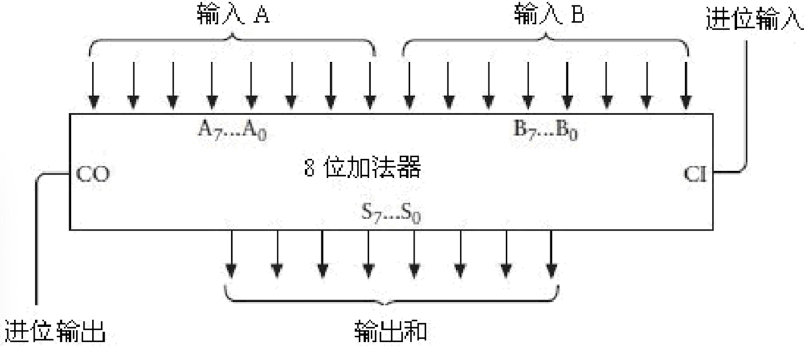
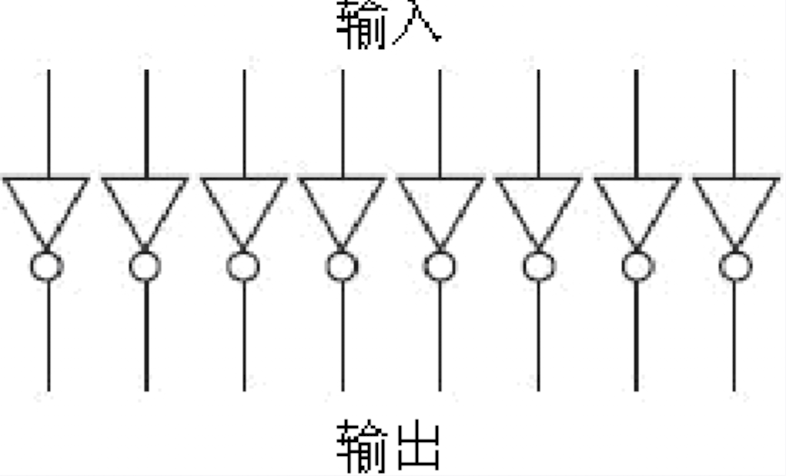
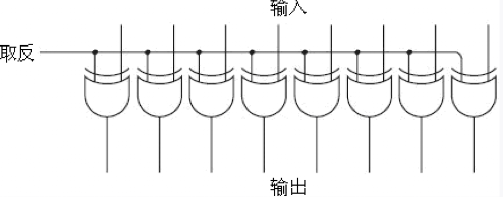
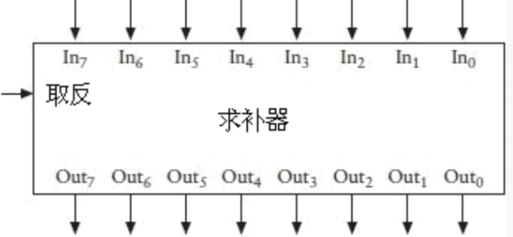
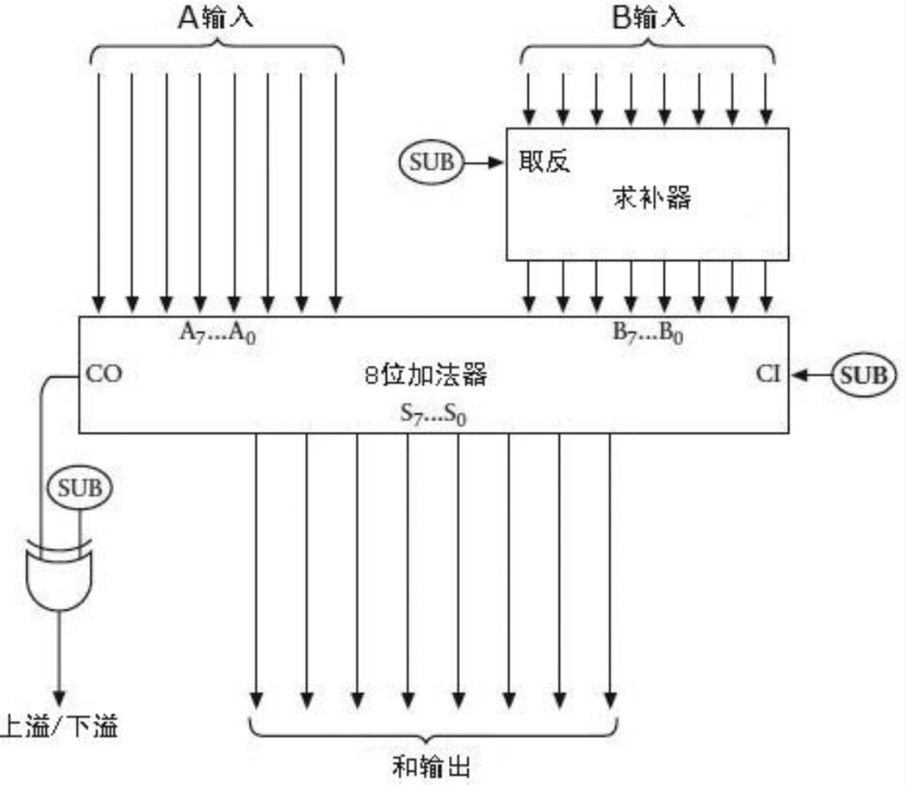

改进加法器，实现减法操作
减法没有进位机制，而是使用到了借位。但是通过一连串逻辑电路实现借位机制比较麻烦，那么我们如何避免发生借位，而有能实现减法呢？
例如：计算 253 - 176
我们可以先加上1000，再减去1000来实现。但是1000-176还是有借位，于是我们可以拆分为999+1的形式。即：
253 - 176 = 253 + (999 - 176) +1 - 1000 = 77
其实上面这个例子就是在求补码，通过补码来计算减法
两数相减=被减数 + 减数求补码
如果被减数小于减数呢？
例如：计算 176 - 253
还是同样的操作，即：
176 - 253 = 176 + (999 - 253) + 1 - 1000 = -77
当然，在计算机中我们需要用二进制来表示他们，可以自行转换成二进制计算。需要注意的是我们目前没办法表示负数，所以二进制得到的结果为77，即 01001101
这样我们就能改进上一章的加法器了，为了避免问题太复杂，这个新的加/减法器只执行减数小于被减数的减法操作，即结果为正数的操作。
下图为我们之前的加法器：

而新的加/减法器可以设计为当计算减法时：减数求反码，CI(进位输入)+1，得到补码的操作。当计算加法时：CI 为0，也不求减数的反码。
对于求反，我们可以使用8个反相器来实现。

而当运行加法运算时，我们不希望反相器工作。所以，我们还需要改进下电路。通过八个异或门来代替反相器。
当计算减法时，“取反”输出信号1。当计算加法时，“取反”输出信号0。

回想一下异或门的工作方式，如下表所示。
| XOR | 0 | 1 |
|---|---|---|
| 0 | 0 | 1 |
| 1 | 1 | 0 |
如果“取反”信号为1，则输出信号反置。例如，如果输入为01100001，输出则为10011110。
将8个异或门合并起来画成一个器件，称为求补器(Ones’ Complement)，如下所示

现在还需要我们的加/减法器的CO(进位输出)输出问题。
- 当计算加法时，即出现上位溢出的情况，我们需要将CO位输出1，即计算结果大于255，该结果需要舍弃
- 当计算减法时。当被减数大于减数，我们可以正常得出结果。当被减数小于减数，我们的结果会出现下溢的情况，该结果也需要舍弃。
所以我们需要一个异或门来实现。
将一个求补器，一个8位二进制加法器和一个异或门做如下连接。

注意，这里三个信号都标识为“SUB”，这就是加/减法转换开关。当该信号为0的时候，其进行的是加法运算，为1时进行的则是减法运算。在减法中，输入B（第二排开关）在送入加法器之前，需先通过求补电路进行取反。此外，在做减法时，我们通过设定CI（进位输入）为1来使得结果加1。而在加法中，求补电路将不起作用，且输入CI为0。
我们可以试着模拟一下这个加/减法器。
模拟计算：253 - 176
1
2
3
4
5
6
7
8
9
10
11
12
13
14
15
16253的二进制码是：1111 1101
176的二进制码是：1011 0000
253的补码是：0000 0011
176的补码是：0101 0000
1. B输入为176，即1011 0000。经过求补器后（求补器中的SUB输出为1），为0100 1111
2. 在加法器中，CI为1（SUB输出1）。
即253+176的反码+1 = 253 + 176的补码 = 253 - 176
253 - 176 = 253 + 176的补码
= 1111 1101 + 0101 0000
= 1 0100 1101
此时CO为1，SUB为1（减法为1），经过异或门输出为0。
最后结果为：0100 1101，即：77模拟计算：176 - 253
1
2
3
4
5
6
7
8
9
10
11
12253的二进制码是：1111 1101
176的二进制码是：1011 0000
253的补码是：0000 0011
176的补码是：0101 0000
1. A输入为176，即：1011 0000。B输入为253，即：1111 1101
2. 减法运算，SUB输出1，对B求反码。即：0000 0010.
3. 8位加法器中，SUB输出为1，即CI为1，176+253的反码+1。
即176+253的补码 = 1011 0000 + 0000 0011
= 1011 0011 = 128+77 = 205
4. CO为0，SUB为1，经过XOR后，结果为1，出现下溢。舍弃当前结果
如何表示负数
详细内容可以看原文，这里只简单介绍
在8位二进制中，我们可以用1开头来表示负数。
对于无符号的8位二进制数，表示的范围为：0 ~ 255。对于有符号的二进制数表示的范围为：-128 ~ 127
| 二进制数 | 十进制数 |
|---|---|
| 1000 0000 | -128 |
| 1000 0001 | -127 |
| 1000 0010 | -126 |
| 1000 0011 | -125 |
| … | … |
| 1111 1101 | -3 |
| 1111 1110 | -2 |
| 1111 1111 | -1 |
| 0000 0000 | 0 |
| 0000 0001 | 1 |
| 0000 0002 | 2 |
| … | … |
| 0111 1100 | 124 |
| 0111 1101 | 125 |
| 0111 1110 | 126 |
| 0111 1111 | 127 |